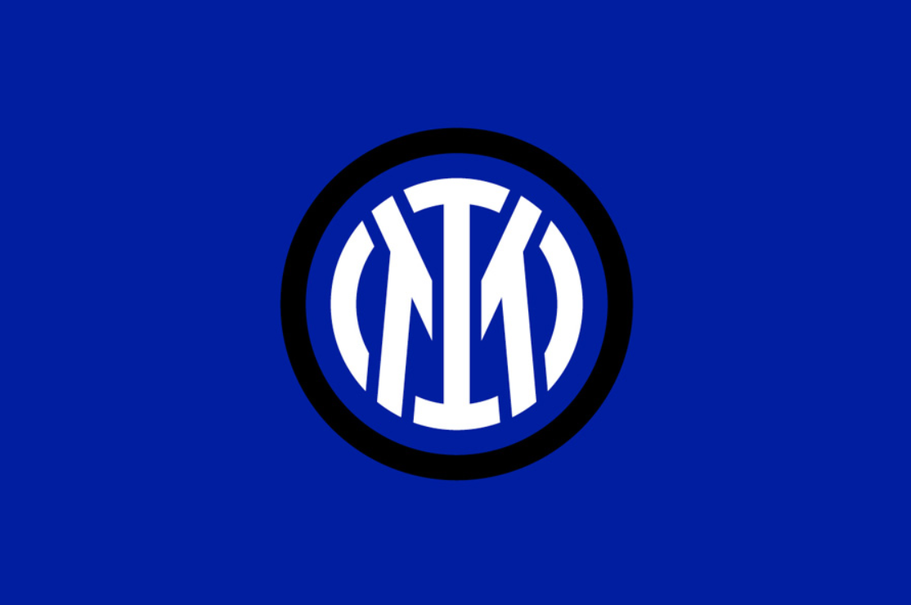
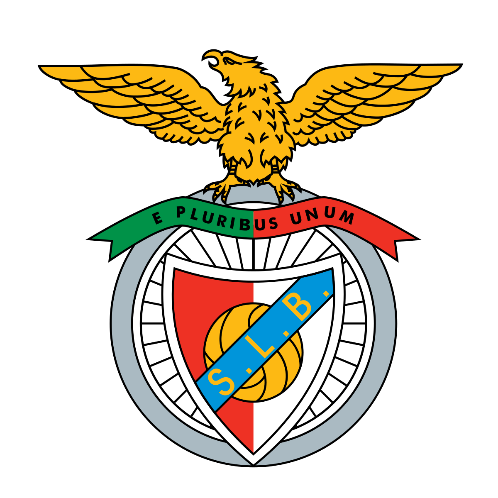
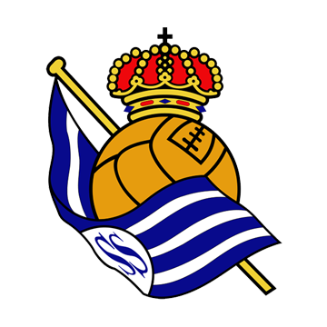

国际米兰

国际米兰足球俱乐部（F.C. Internazionale Milano，简称国米），是一家位于意大利伦巴第大区米兰市的足球俱乐部，成立于1908年3月9日。球队主场为梅阿查体育场，现征战于意大利足球甲级联赛。
国际米兰曾为“意甲七姐妹”之一，也与AC米兰和尤文图斯两支球队并称为北方三强。与AC米兰这支同样来自米兰的俱乐部之间的碰撞被称为“米兰德比”，和来自都灵的尤文图斯之间的对决则称为“国家德比”。国际米兰是唯一一支拿过五冠王（欧冠、意甲、意大利杯、意大利超级杯和国际足联俱乐部世界杯）的意大利联赛球队。
本菲卡

本菲卡足球俱乐部（S.L. Benfica）是一家位于葡萄牙首都里斯本的综合体育俱乐部，俱乐部成立于1904年2月28日，前身为“里斯本体育俱乐部”（Sport Lisboa），1908年与“本菲卡体育俱乐部”（Grupo Sport Benfica）合并后改为现名。本菲卡足球队是历史上第二支夺得欧冠冠军的俱乐部，七次打入欧冠决赛的成绩仅次于皇家马德里、AC米兰、拜仁慕尼黑、巴塞罗那和尤文图斯。由于本菲卡昵称“雄鹰”，俱乐部甚至专门饲养有一只鹰作为吉祥物。
2022年11月3日，本菲卡凭借着客场进球多的优势，最后关头在欧冠小组赛中以小组第一出线。2023年8月10日，本菲卡队史第九次获得葡萄牙超级杯冠军。
皇家社会
